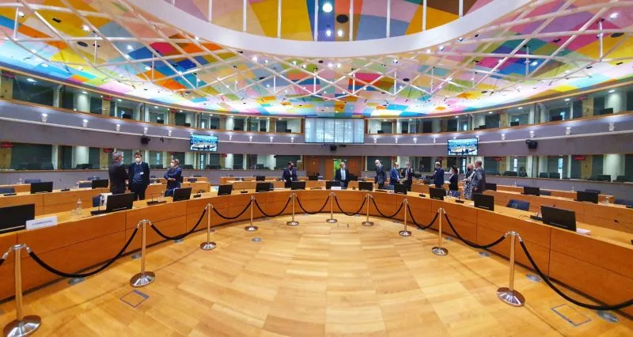

Wir brauchen einen Trilog für europäische Außenpolitik

LinkedIn blog post, 17/06/2025, von Sven Franck (en français, in english)
TL;DR – Kürzlich sah ich Jeffrey Sachs im EU-Parlament sprechen und kann seine Kritik nur unterstreichen, dass der Europäischen Union eine echte Außenpolitik fehlt – idealerweise in Rahmen einer Europäischen Verfassung definiert, nicht untergeordnet gegenüber den USA und nicht auf Einstimmigkeit angewiesen. Ja, ja, geht nicht von heute auf morgen, aber schon jetzt und unter den gegebenen Umständen könnte Europa deutlich besser agieren.
Going Ursolo
Stattdessen versteckt sich die Kommissionspräsidentin in geopolitischen Fragen oft hinter Frankreich und Deutschland und wird regelmäßig kritisiert, weil sie ohne Konsens oder Mandat Stellung bezieht – siehe die irischen Europa-Abgeordneten, die ihre Haltung zu Israels jüngstem Angriff auf den Iran infrage stellen.
Ich verstehe den Frust: Kleinere Mitgliedstaaten werden nicht eingeladen, wenn Macron, Merz und Starmer über die Zukunft der Europäischen Union 🇪🇺 sprechen – Warum nicht? Sie haben auch kein Mitspracherecht, wenn die Kommissionspräsidentin im "Autokraten-Modus" das EU-Motto „In Vielfalt geeint“ durch „Ich bin Europa“ ersetzt. Ein stärkeres Europa sollte nicht bedeuten, Trump oder Putin nachzuahmen, sondern unsere Union besser zu integrieren – was für mich auch transparente und repräsentative Entscheidungsprozesse beinhalten muss.
Trilog-Abstimmung gefällig?
Theoretisch könnte Außenpolitik durch eine Abstimmung zwischen drei Repräsentanten entschieden werden:
- einer aus der Kommission, quasi der „EU-Regierung“
- einer aus dem Rat der Europäischen Union, der die Regierungen der Mitgliedstaaten gleichberechtigt vertritt (sozusagen ein Senat)
- einer aus dem Parlament, das die Mitgliedstaaten nach Bevölkerungsgröße repräsentiert
Im legislativen Alltag bringt jede Institution ihren eigenen Gesetzestext in solche Triloge ein, um einen Kompromiss zu finden, der anschließend vom Rat und Parlament abgestimmt wird. Warum nicht dieses Verfahren als Vorbild nehmen und für die außenpolitischen Positionen der EU nutzen? Vielleicht sogar zulassen, dass jede Institution Anträge einbringen darf – der Rat und das Parlament mit qualifizierter Mehrheit? Ohne Quorum, es sei denn, 1/20 der Mitglieder verlangen es?
Natürlich steckt der Teufel im Detail, aber wenn unsere Kommission tatsächlich daran interessiert wäre, legitim zu repräsentieren und Politik zu machen, könnte sie ein Verfahren vorschlagen, bei dem die obigen drei Repräsentanten eine Position abstimmen (450 Millionen Bürger auf ein 3:0- oder 2:1-Votum heruntergebrochen).
Nicht alle wären glücklich, denn Demokratie bedeutet Kompromisse und Mehrheiten. Aber es wäre transparent und gäbe allen Mitgliedstaaten die Chance, die europäische Außenpolitik mitzugestalten. Noch besser: Es würde zeigen, wie die EU eines Tages tatsächlich funktionieren könnte. Was spricht dagegen? Mehr davon auf #jumpstartEU